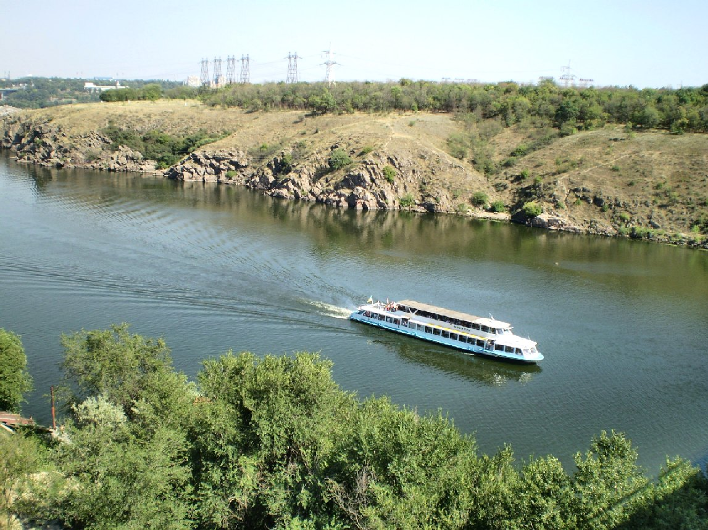
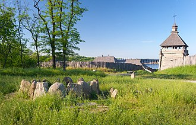
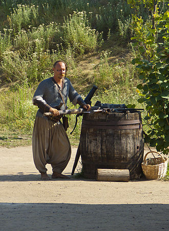
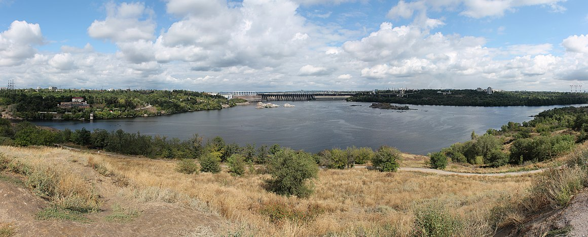

Хо́ртиця
Назва
Існує дуже багато версій походження назви острова, втім більшість дослідників виводить назву від тюрксько-половецького «орт», «орта», що означає «середній» (посеред Дніпра). Серед низки версій, назву виводять від «хорт» — «пес», від давньослов'янського бога Хорса. Вперше назва острова трапляється у праці імператора Костянтина Багрянородного «Про управління імперією». В різних списках цієї праці Хортиця носить назву острів Святого Григорія та острів Святого Георгія. Щодо Григорія, то вважають, що це був вірменський просвітник Св. Григор. У руських літописах острів називається Хортичем, Кортицьким, Городецьким, Ортинським, Інтрським островом. Вперше назва Хортичий острів згадана у зв'язку з походом князя Святослава Ізяславича проти половців 1103 року. У Воскресенському літопису під 1223 роком острів названий Варязьким островом. Еріх Лясота, Боплан писали про Хортицю та Хіртицю, польський хроніст Марцін Бельський писав про Хорчика. Василь Зуєв й князь Мишецький називали острів Хортиц. В атласі Дніпра 1786 року адмірала Пущина іменується Хитрицький, в Рігельмана — Хордецький острів. Дмитро Донцов наводить легенду, де йдеться про те, що «Хортицею той острів прозивався по причині, що там колись у давнину стародавня була хвортеця». Проте, ця легенда не є переконливою з наукової точки зору.
Природа
З геологічного погляду, Хортиця є частиною Українського кристалічного щита. Долина Дніпра в районі Хортиці є єдиною збереженою ділянкою порожистої частини річки. До будівництва Дніпровської ГЕС русло Дніпра перетинало дев'ять порогів. Безпосередньо біля острова Хортиця не було порогів, але збережені скельні острови й скельні структури в північній частині острова мають характерні для порогів особливості. Хортиця й прилеглі до неї острови оголошені геологічним заказником «Дніпровські Пороги». Геологічною основою острова служать докембрійські породи віком близько 2,5 млрд років, у першу чергу — граніти, покриті шаром більш молодих осадових порід. У північній частині Хортиці над берегом піднімаються скелі заввишки 40—50 м, що спадають до півдня. Флора Хортиці нараховує понад 1000 видів вищих рослин, з яких 15 % є ендеміками. На острові стикаються різноманітні природні зони: різнотравно-ковилові степи, дубові й хвойні ліси, заплавні луки. Завдяки особливим мікрокліматичним умовам, утвореним могутньою річкою, рослинні угруповання істотно відрізняються від материкових.
Історія
Мезоліт
Людина з'явилася на острові ще в епоху мезоліту. Перші археологічні знахідки відносять до доби мезоліту (10—6 тисячоліття до до н.е) у північній та східній частинах Хортиці. Пам'ятки дніпро-донецької культури доби неоліту (5—3 тис. до до н.е) — у селі Середній Стіг і урочищі Вирва.
Енеоліт
Поселення знайдено у північно-східній частині острова, де до 1970 рр. існувало давнє козацьке село Середній Стіг, яке дало назву Середньостогівській культурі енеоліту 4 тис. до Р. Х. Від цих поселень залишилися численні поховання, городища й культові споруди, велика кількість крем'яних, кам'яних, кістяних та рогових знарядь праці на острові Байди, в урочищах Вирва, Дурна Скеля, Соловка Гай та в північній частині Хортиці. Численні знахідки цього часу було піднято зі дна Старого Дніпра.
Бронза
Перші істотні досліджені поселення належать до епохи бронзи (III—II тис. до н. е.). Пам'ятки бронзи відомі по всій території Хортиці: поховання ранньої бронзи поселення племен ямної культури 3—2 тис. до н. е. (північно-східна частина острова); поселення племен катакомбної культури, перша половина 2 тис. до н. е. (східний схил балки Совутиної); поселення племен культури багатовалікової кераміки 16—15 ст. до н. е. (північно-східна частина острова); поселення племен зрубної культури 15—14 ст. до н. е. (південний схил балки Молодняга). На острові Байда була виявлена потужна фортеця з кількома рядами стін та ровів, що була столичним замком усього Нижнього Подніпров'я. Тут було знайдено святилища, де, можливо, проводили астрономічні спостереження.
Залізна доба
Городище «Совутина Скеля» є пам'яткою скіфського часу 7—3 ст. до н. е., де досліджено оборонні (до 6 м), житлові та господарські будівлі. Численні ґрунтові і курганні могильники (6 курганних груп). Сармати з 2 ст. до Р. Х. до 3 ст. залишили окремі поховання і монети. В 1925 році була знайдена тетрадрахма царя Єфтидема Бактрійського 2—1 ст. до Р. Х. (в річці біля Хортиці) і римський динарій імператора Адріана. Могильник черняхівської культури (2 ст.) на території сучасної СШ № 43, поселення на острові Байда та на річці Середня Хортиця.
Доба Київської Русі
У IX сторіччі на півдні острова виникло неукріплене містечко бродників, назване А. Сокульським «Протолче». Воно було слов'янське. Поселення лежало біля стародавньої переправи через Дніпро — Протолчий брід. Поселення існувало у 10—14 сторіччях. Про торговельну активність населення можуть свідчити виявлені тут арабські й інші монети. Костянтин VII Багрянородний згадує в середині X століття Хортицю у творі «De administrando imperio» як острів св. Григорія. За легендою, 972 року біля Дніпрових порогів загинув у боротьбі з печенігами князь Святослав Ігоревич, повертаючись із походу на Константинополь. Цікаво, що в цих місцях на дні Дніпра знаходили старовинну зброю, яка втратилася в часи Другої світової війни. 2011 року знайдено коштовний давньоруський меч каролінгського типу, який одразу нарекли «мечем Святослава» 1928 року під час будівництва Дніпрогесу поблизу Хортиці на дні Дніпра було виявлено чотири мечі й один клинок без руків'я. За написами, клинки є франкського походження, за орнаментацією руків'їв — вироблені на берегах Балтики в другій половині 10 — початку 11 ст. (ще один подібний меч 10 сторіччя був знайдений у протоці гирла Дніпра). У подальшому острів постійно використовувався як українська база проти половців і монголо-татар. 1103 року руські князі на чолі з Святополком Ізяславичем зійшлися на Хортиці перед походом на половців (Іпатський літопис). 1223 року руські князі зустрілися на нараду на Хортиці перед битвою з татарами на Калці.
Козацька доба
На острові багато назв, пов'язаних з перебуванням запорожців: урочище Сагайдачного, Січові ворота, Козача могила, Совутина скеля та інші. Хортиця відіграла чималу роль у боротьбі козаків проти татар і поляків. У XV столітті Хортиця стала центром формування протидії Польщі з боку козаків. Козаки будували тут, як і на інших островах, «засіки». Саме на Малій Хортиці (можливо за 10 км на північ від Хортиці, або на острові Байди) у 1550-х роках князь Дмитро Вишневецький-Байда збудував фортецю, що планувалася польським урядом для контролю над рухом козаків через Дніпро і на Хортиці. У січні 1557 року турецько-татарські війська напали на фортецю і згодом зруйнували. На острові Байда були виявлені залишки дерев'яних укріплень, оборонні, господарські споруди та житлові приміщення XVI століття.  У 1596—1648 роках з короткими перервами на Хортиці перебувала залога реєстрових козаків; звідти починали повстанські походи Тарас Федорович Трясило (1630), Іван Сулима (1635). У 1648 році Богдан Хмельницький розгромив на Хортиці польську залогу. У 1660—1670-х роках Хортиця була військовою базою Івана Сірка. У балках Молодняга, Липова, Совутина відкриті зимівники запорозьких козаків XVIII століття, де знайдені цвяхи, кераміка, ножі, фрагменти пічки та інше. Під час російсько-турецької війни у 1735–1739 роках на Хортиці збудовані укріплення, залишки яких збереглися. У 1736 році на Хортиці була заснована Запорозька верф, для її захисту побудовані фортеця та ретраншемент. Декілька десятків чайок верфи затонуло біля острова. До зруйнування Січі 1775 року Хортиця належала до володінь Запорозької Січі.
У складі Російської імперії
1789 року на східному березі острову заснована німецька менонітська колонія Острів Хортиця, що входила до Хортицької волості Катеринославського повіту. У 1886 року тут було 452 мешканці, 23 двори, школа.
У складі СРСР
14 березня 1927 року розпочалося будівництво ДніпроГЕСу. Протягом 1927—1928 років на Хортиці споруджуються будівлі технічного призначення: водогін, водонасосна станція, через Нове Дніпро організована паромна переправа. У лютому 1928 року розпочинається будівництво мостів. Головним архітектором проєкту був М. Стрілецький. Мости були здані в експлуатацію 5 вересня 1931 року. 1965 року острів став державним історико-культурним заповідником, в якому передбачено створити музейний комплекс, присвячений історії запорозького козацтва.
Сучасність
Острів інтегровано в структуру Запоріжжя. Через острів проходить залізниця зі станцією Запорізька Січ в середній частині острова. Працюють чотири автомобільні мости. На острові є заселені селища, велика кількість означених пам'яток історії й археології. Десятки будинків відпочинку, санаторіїв, туристичних баз. Піщані пляжі. Смерекові й листяні ліси. Унікальні плавні на півдні. 28 березня 2007 року, напередодні Великодніх свят, на святому місці був відкритий пам'ятник українській писанці, що став незабаром місцем активного паломництва віруючих. Древнє святилище на хортицькій землі у вигляді вселенського символу світобудови являє собою виконане з Янцевського граніту яйце вагою дев'ятсот кілограм, яке встановлене в центральній частині острова. Його значний обсяг (обхват — 2,85 м, висота — 1,35 м), розфарбований у червоно-біло-чорній гамі з використанням традиційних візерунків місцевої розпису, покоїться на постаменті з дикого каменю з сакральної написом «Краса, добробут, родовід». У 2013 році художником Леонідом Нікітіним писанка була заново пофарбована. Нові яскраві кольори символізують довголіття, плодовитість і добробут під захистом вогню фарби в поєднанні з покровом містичної таємниці минулого і древнім запорізьким орнаментом — ось те, що зробило цей пам'ятник унікальним і відомим на всю Україну 2007 року на Хортиці було розбудовано комплекс «Запорозька Січ». Частина будівель була створена як декорація до багатосерійного фільму «Тарас Бульба» режисера В. Бортка. На території комплексу відтворено козацькі курені, гострокіл та оборонну вежу. Збудовано невелику триповерхову дерев'яну церкву, присвячену Покрові Богородиці. Комплекс відкрито для відвідувачів, передбачене екскурсійне обслуговування. У 2017 році відкрили масштабний туристичний об’єкт -- «Хортицький лабіринт». Сучасні археологічні дослідження на острові Хортиця продовжують приносити все нові відкриття. 24 грудня 2020 року відкрито односторонній автомобільний рух на Балковому мосту (споруда № 5), що веде з Хортицького району до острова Хортиця, через річку Старий Дніпро. 24 червня 2021 року на острові Хортиця відкрито меморіал Хортицьких менонітів, які мешкали на основі Хортиця. Ідея його створення виникла після того, як на Хортиці знайшли 200 менонітських надгробків. Співробітники Національного заповідника «Хортиця» відновили пам'ять знищеного радянською владою субетносу менонітів, які за півтора століття створили на запорізькій землі справжню європейську цивілізацію і передову економіку. Меморіал Хортицьких менонітів створили з надгробків, які історики знайшли у фундаменті побудованого комуністами колгоспного зерносховища. 2019 року співробітники Національного заповідника Хортиця провели розкопки, під час яких знайшли понад 200 надгробків менонітів.1939 року в колонії Хортиця зруйнували менонітський цвинтар, який заснували ще 1790 року. Могильні плити менонітів замурували у сільськогосподарську споруду неподалік. Разом із канадською менонітською діаспорою співробітники заповідники зайнялися ідентифікацією похованих. Наступні роки відбувалася реставрація 15 надгробків, за допомогою яких на Хортиці утворили меморіал менонітам.  12 липня 2021 року, в рамках 4-го етапу дискусійної платформи «Хортиця: видатна історія — велике майбутнє», відбулася презентація нового брендингу Хортиці, в ході якого був представлений весь комплекс брендингу та його можливе застосування: лого, шрифти, постери, мерч, покажчики. 31 серпня 2021 року на острові Хортиця завершено будівництво нового спортивного комплексу. Роботи з будівництва комплексного спортивного ядра навчального закладу «Хортицька національна навчально-реабілітаційна академія» виконали в рамках проєкту будівництва Запорізьких мостових переходів, які є флагманом програми «Велике Будівництво», за кошти генерального підрядника — компанії «Онур». Відродження острова Хортиця є вдалим прикладом того, як держава та великий бізнес можуть разом робити успішні масштабні проєкти перетворень. Група «Метінвест» гарантувала оперативне системне залучення в різні галузі та показала результат — 14 жовтня 2021 року відкриті сучасні знакові об'єкти: артоб'єкт «Коло Єдності» (металеве кільце заввишки 7 м з кортеновим покриттям) та лазерне шоу «Трансформації крізь історію» (9 надпотужних проєкторів із звуковим супроводом транслюють ексклюзивне відео-контент — яскраві історичні образи і національні символи, що розкривають українську ідентичність на схили Пагорба Єдності, дніпрові пороги, що виступають у острова, та у небо). З 3 листопада 2021 року на острові Хортиця є можливість відвідати імерсивну аудіовиставу «Шлях» про українську ідентичність.